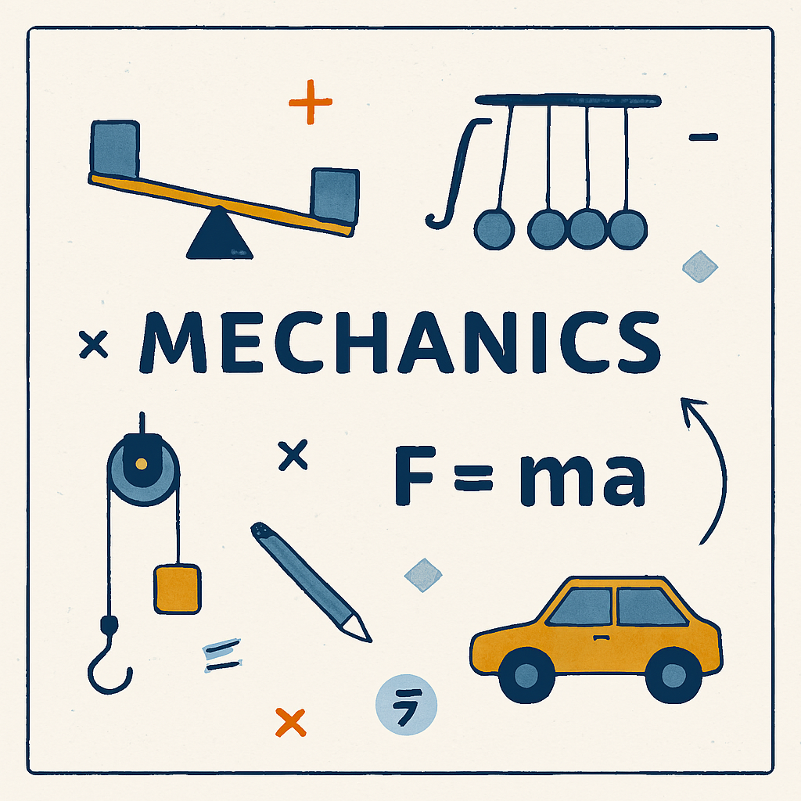
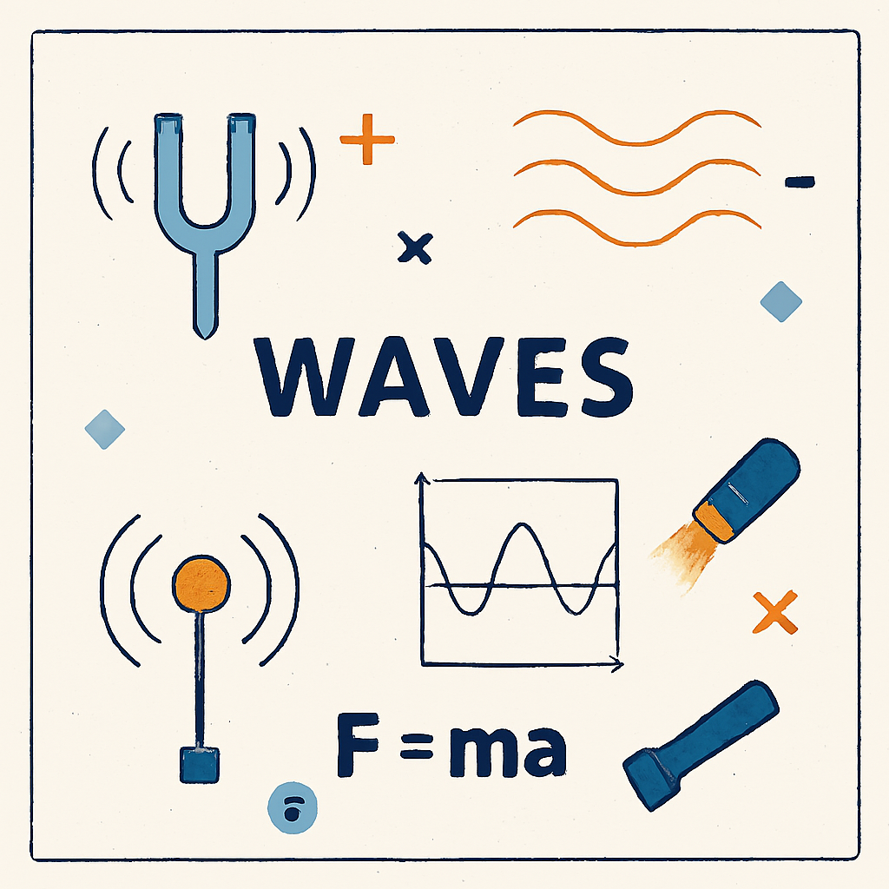
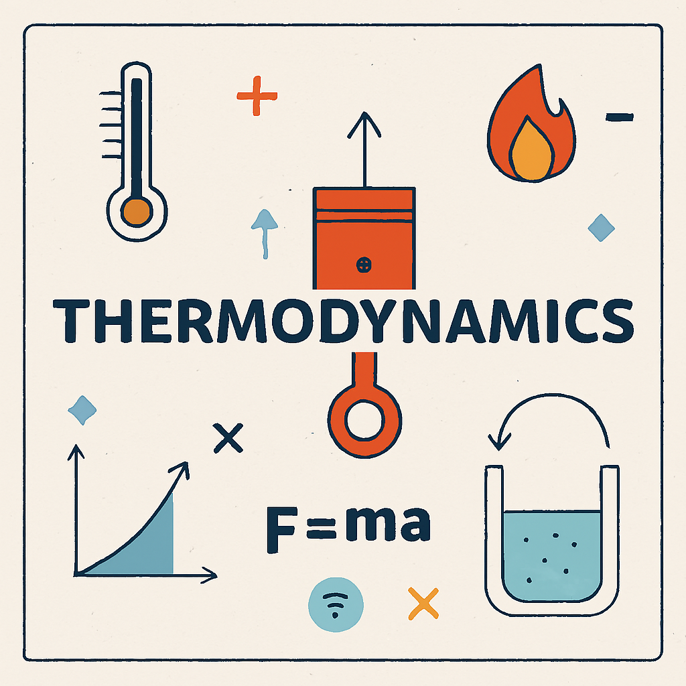

Mecánica
La mecánica es la rama de la física que estudia el movimiento de los cuerpos y las fuerzas que lo causan. Analiza cómo se mueven los objetos, por qué se mueven de cierta manera y qué fuerzas intervienen en esos movimientos. La mecánica es fundamental para entender fenómenos desde el movimiento de un automóvil hasta el de los planetas.
Ejemplo Practico
Un ciclista de 70 kg (incluyendo la bicicleta) que viaja a 10 m/s frena y se detiene en 5 segundos. ¿Cuál es la fuerza de frenado?
Paso 1: Calculamos la aceleración
Usamos: a = (velocidad final - velocidad inicial) / tiempo
a = (0 - 10) / 5 = -2 m/s²
(Negativa porque disminuye la velocidad)
Paso 2: Aplicamos la segunda ley de Newton: F = m × a
F = 70 kg × (-2 m/s²) = -140 N
Interpretación: Se necesita una fuerza de 140 newtons en dirección opuesta al movimiento para frenar el ciclista. Este ejemplo muestra cómo la mecánica relaciona fuerzas, masa y aceleración para entender el comportamiento de los objetos en movimiento.
Ondas
Las ondas son perturbaciones que se propagan a través de un medio (como agua, aire o luz) transportando energía de un lugar a otro sin transportar materia. Son fenómenos fundamentales en la naturaleza presentes en el sonido, la luz, el movimiento del agua y muchos otros procesos físicos.
Ejercicio Practico
Imagina que arrojas una piedra a un estanque de agua. Se forman ondas concéntricas que se expanden. Digamos que estas ondas tienen las siguientes características:
Frecuencia: 2 oscilaciones por segundo (2 Hz)
Longitud de onda: 0.5 metros (distancia entre crestas consecutivas)
Pregunta: ¿A qué velocidad se propagan las ondas?
Usamos la fórmula:
v = λ × f
Donde: v = velocidad, λ = longitud de onda, f = frecuencia
Aplicamos los datos:
v = 0.5 m × 2 Hz = 1 m/s
Las ondas se propagan a 1 metro por segundo.
Otro dato: El período (tiempo de una oscilación) es: T = 1/f = 1/2 = 0.5 segundos
Esto significa que cada punto del agua completa una oscilación completa cada 0.5 segundos. Este ejemplo muestra cómo las ondas transportan energía a través del espacio de manera predecible y medible.
Termodinámica
La termodinámica es la rama de la física que estudia el calor, la temperatura, la energía y cómo se transforman entre sí. Analiza procesos térmicos y energéticos en sistemas físicos, desde máquinas hasta reacciones químicas y fenómenos naturales. Es esencial para entender cómo funciona el universo a nivel energético.
Ejemplo Practico
Calientas agua en una olla desde 20°C hasta 80°C. La olla contiene 2 kilogramos de agua. ¿Cuánta energía térmica fue necesaria?
Usamos la fórmula de calor:
Q = m × c × ΔT
Donde: Q = calor (energía), m = masa, c = calor específico, ΔT = cambio de temperatura
Datos:
m = 2 kg (masa del agua)
c = 4,186 J/(kg·°C) (calor específico del agua)
ΔT = 80°C - 20°C = 60°C
Calculamos:
Q = 2 kg × 4,186 J/(kg·°C) × 60°C = 502,320 J ≈ 502.3 kJ
Se necesitaron aproximadamente 502 kilojulios de energía para calentar el agua.
Interpretación: Este ejemplo demuestra la primera ley de la termodinámica: la energía que suministras (calor) se transforma en energía interna del agua, elevando su temperatura. La termodinámica permite calcular exactamente cuánta energía se requiere en procesos cotidianos como cocinar, calentar hogares o generar electricidad.